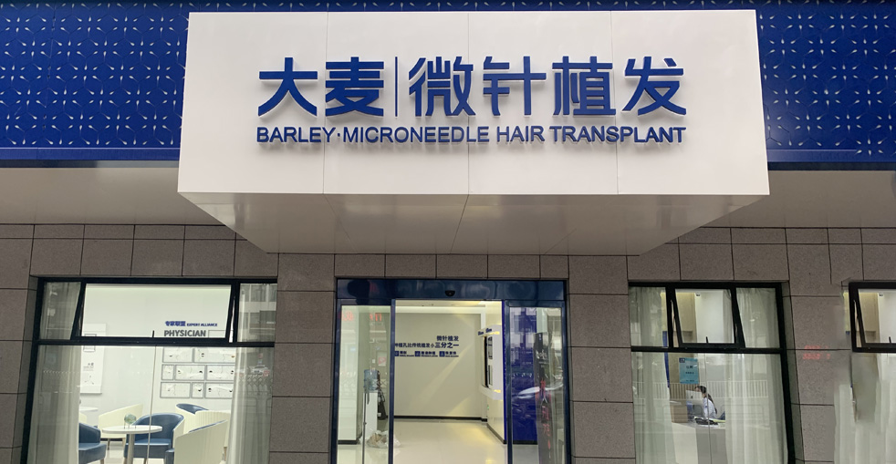
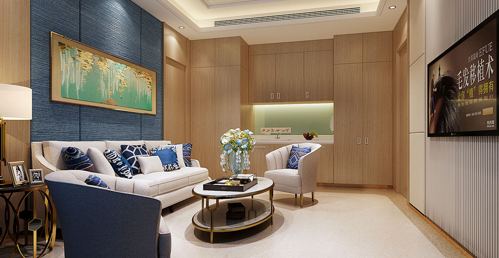

您完整頭髮修復旅程的逐步指南

從您的第一次諮詢到最終結果，大麥每一步都陪伴著您。我們成熟的植髮流程已在18年和100,000+次手術中不斷完善，為每位患者帶來最佳可能結果。了解每個階段幫助您知道預期什麼以及如何從您的體驗中獲得最多。
大麥如何結合中西方案的精華
詳細查看您植髮的每個階段
您頭髮修復旅程的每個階段
完整評估和個人化計畫
創建您完美的髮際線和覆蓋
為您的手術日準備一切
您的植髮手術日
術後護理和指導
癒合、脫落和新生長
您轉變的完整時間表
新頭髮開始冒出和生長
達到顯著可見生長
成熟結果完全建立
持久結果的持續支持
保持您的頭髮看起來很棒
新自信和持久結果
具有證實結果的業界領導者
自2006年以來微針植髮技術的先驅和領導者
遍佈中國主要城市，都具有相同的高標準
創新的微針和種植筆技術，帶來優異結果
受到全球患者信賴，帶來改變人生的結果
為國際患者在整個治療過程中提供完整英語支持
最先進的設施和嚴格的安全協議，讓您安心
看看我們患者實現的驚人轉變


與我們滿意患者的瞬間

成功手術後與我們醫療團隊合影

與我們的醫生慶祝極佳結果

另一位滿意患者分享他們的喜悅

患者出院前與我們專家合影

開心的患者與陳醫生治療後合影

興奮的患者展示他們的新外觀
聽聽我們全球滿意患者的分享
"逐步流程讓我感到如此有準備！從諮詢到術後護理，每個階段都清晰和專業！"
"術前指示如此詳盡！我確切知道做什麼準備！我的恢復順利且快速！"
"術後護理指南不可思議！我有每天需要的所有資訊！沒有猜測，只有很棒的結果！"
"追蹤檢查給了我如此多安心！他們監控我的進度並回答我所有問題！"
"知道3、6、9個月生長時間表幫助管理我的預期！完美結果每個月變得更好！"
"從設計到植入的每個階段都完美解釋！整個流程我感到完全自信！"
體驗我們現代且舒適的設施

我們最先進的設施

在我們的高級休息室放鬆

無菌且先進

私密且專業

舒適的術後空間

溫馨的入口
找到有關植髮的常見問題答案
聯絡我們進行免費諮詢
15810155700
+86 13730143529
hairtransplant@qq.com